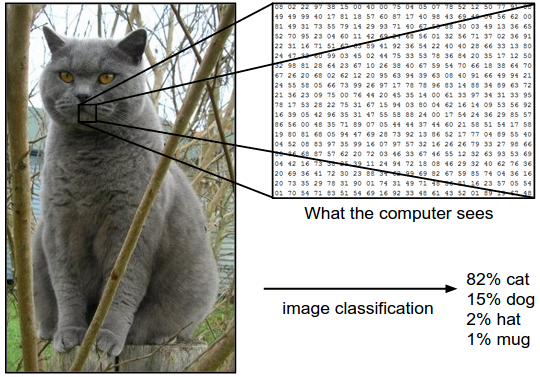
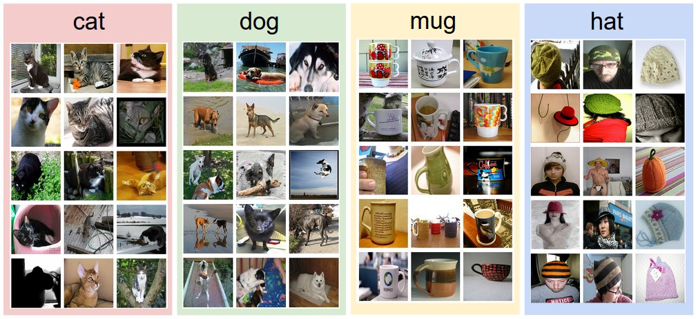
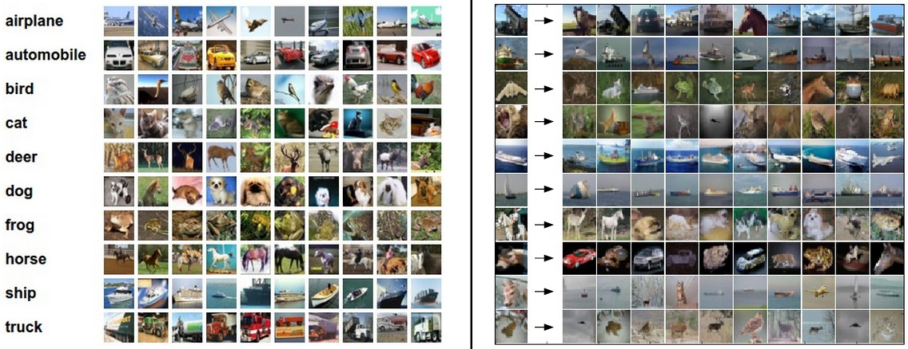
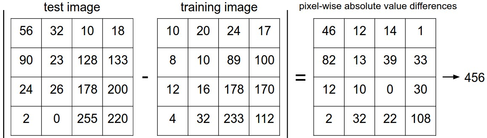
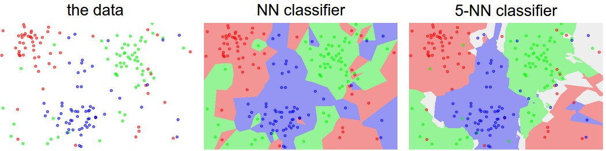
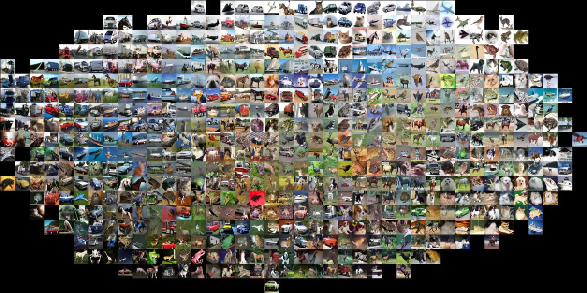

This is an introductory lecture designed to introduce people from outside of Computer Vision to the Image Classification problem, and the data-driven approach. The Table of Contents:
Motivation. In this section we will introduce the Image Classification problem, which is the task of assigning an input image one label from a fixed set of categories. This is one of the core problems in Computer Vision that, despite its simplicity, has a large variety of practical applications. Moreover, as we will see later in the course, many other seemingly distinct Computer Vision tasks (such as object detection, segmentation) can be reduced to image classification.
Example. For example, in the image below an image classification model takes a single image and assigns probabilities to 4 labels, {cat, dog, hat, mug}. As shown in the image, keep in mind that to a computer an image is represented as one large 3-dimensional array of numbers. In this example, the cat image is 248 pixels wide, 400 pixels tall, and has three color channels Red,Green,Blue (or RGB for short). Therefore, the image consists of 248 x 400 x 3 numbers, or a total of 297,600 numbers. Each number is an integer that ranges from 0 (black) to 255 (white). Our task is to turn this quarter of a million numbers into a single label, such as “cat”.

Challenges. Since this task of recognizing a visual concept (e.g. cat) is relatively trivial for a human to perform, it is worth considering the challenges involved from the perspective of a Computer Vision algorithm. As we present (an inexhaustive) list of challenges below, keep in mind the raw representation of images as a 3-D array of brightness values:
A good image classification model must be invariant to the cross product of all these variations, while simultaneously retaining sensitivity to the inter-class variations.
Data-driven approach. How might we go about writing an algorithm that can classify images into distinct categories? Unlike writing an algorithm for, for example, sorting a list of numbers, it is not obvious how one might write an algorithm for identifying cats in images. Therefore, instead of trying to specify what every one of the categories of interest look like directly in code, the approach that we will take is not unlike one you would take with a child: we’re going to provide the computer with many examples of each class and then develop learning algorithms that look at these examples and learn about the visual appearance of each class. This approach is referred to as a data-driven approach, since it relies on first accumulating a training dataset of labeled images. Here is an example of what such a dataset might look like:

The image classification pipeline. We’ve seen that the task in Image Classification is to take an array of pixels that represents a single image and assign a label to it. Our complete pipeline can be formalized as follows:
As our first approach, we will develop what we call a Nearest Neighbor Classifier. This classifier has nothing to do with Convolutional Neural Networks and it is very rarely used in practice, but it will allow us to get an idea about the basic approach to an image classification problem.
Example image classification dataset: CIFAR-10. One popular toy image classification dataset is the CIFAR-10 dataset. This dataset consists of 60,000 tiny images that are 32 pixels high and wide. Each image is labeled with one of 10 classes (for example “airplane, automobile, bird, etc”). These 60,000 images are partitioned into a training set of 50,000 images and a test set of 10,000 images. In the image below you can see 10 random example images from each one of the 10 classes:

Suppose now that we are given the CIFAR-10 training set of 50,000 images (5,000 images for every one of the labels), and we wish to label the remaining 10,000. The nearest neighbor classifier will take a test image, compare it to every single one of the training images, and predict the label of the closest training image. In the image above and on the right you can see an example result of such a procedure for 10 example test images. Notice that in only about 3 out of 10 examples an image of the same class is retrieved, while in the other 7 examples this is not the case. For example, in the 8th row the nearest training image to the horse head is a red car, presumably due to the strong black background. As a result, this image of a horse would in this case be mislabeled as a car.
You may have noticed that we left unspecified the details of exactly how we compare two images, which in this case are just two blocks of 32 x 32 x 3. One of the simplest possibilities is to compare the images pixel by pixel and add up all the differences. In other words, given two images and representing them as vectors \( I_1, I_2 \) , a reasonable choice for comparing them might be the L1 distance:
\[ d_1 (I_1, I_2) = \sum_{p} \left| I^p_1 - I^p_2 \right| \]
Where the sum is taken over all pixels. Here is the procedure visualized:

Let’s also look at how we might implement the classifier in code.
First, let’s load the CIFAR-10 data into memory as 4 arrays: the
training data/labels and the test data/labels. In the code below,
Xtr (of size 50,000 x 32 x 32 x 3) holds all the images in
the training set, and a corresponding 1-dimensional array
Ytr (of length 50,000) holds the training labels (from 0 to
9):
Xtr, Ytr, Xte, Yte = load_CIFAR10('data/cifar10/') # a magic function we provide
# flatten out all images to be one-dimensional
Xtr_rows = Xtr.reshape(Xtr.shape[0], 32 * 32 * 3) # Xtr_rows becomes 50000 x 3072
Xte_rows = Xte.reshape(Xte.shape[0], 32 * 32 * 3) # Xte_rows becomes 10000 x 3072Now that we have all images stretched out as rows, here is how we could train and evaluate a classifier:
nn = NearestNeighbor() # create a Nearest Neighbor classifier class
nn.train(Xtr_rows, Ytr) # train the classifier on the training images and labels
Yte_predict = nn.predict(Xte_rows) # predict labels on the test images
# and now print the classification accuracy, which is the average number
# of examples that are correctly predicted (i.e. label matches)
print 'accuracy: %f' % ( np.mean(Yte_predict == Yte) )Notice that as an evaluation criterion, it is common to use the
accuracy, which measures the fraction of predictions
that were correct. Notice that all classifiers we will build satisfy
this one common API: they have a train(X,y) function that
takes the data and the labels to learn from. Internally, the class
should build some kind of model of the labels and how they can be
predicted from the data. And then there is a predict(X)
function, which takes new data and predicts the labels. Of course, we’ve
left out the meat of things - the actual classifier itself. Here is an
implementation of a simple Nearest Neighbor classifier with the L1
distance that satisfies this template:
import numpy as np
class NearestNeighbor(object):
def __init__(self):
pass
def train(self, X, y):
""" X is N x D where each row is an example. Y is 1-dimension of size N """
# the nearest neighbor classifier simply remembers all the training data
self.Xtr = X
self.ytr = y
def predict(self, X):
""" X is N x D where each row is an example we wish to predict label for """
num_test = X.shape[0]
# lets make sure that the output type matches the input type
Ypred = np.zeros(num_test, dtype = self.ytr.dtype)
# loop over all test rows
for i in range(num_test):
# find the nearest training image to the i'th test image
# using the L1 distance (sum of absolute value differences)
distances = np.sum(np.abs(self.Xtr - X[i,:]), axis = 1)
min_index = np.argmin(distances) # get the index with smallest distance
Ypred[i] = self.ytr[min_index] # predict the label of the nearest example
return YpredIf you ran this code, you would see that this classifier only achieves 38.6% on CIFAR-10. That’s more impressive than guessing at random (which would give 10% accuracy since there are 10 classes), but nowhere near human performance (which is estimated at about 94%) or near state-of-the-art Convolutional Neural Networks that achieve about 95%, matching human accuracy (see the leaderboard of a recent Kaggle competition on CIFAR-10).
The choice of distance. There are many other ways of computing distances between vectors. Another common choice could be to instead use the L2 distance, which has the geometric interpretation of computing the euclidean distance between two vectors. The distance takes the form:
\[ d_2 (I_1, I_2) = \sqrt{\sum_{p} \left( I^p_1 - I^p_2 \right)^2} \]
In other words we would be computing the pixelwise difference as before, but this time we square all of them, add them up and finally take the square root. In numpy, using the code from above we would need to only replace a single line of code. The line that computes the distances:
distances = np.sqrt(np.sum(np.square(self.Xtr - X[i,:]), axis = 1))Note that I included the np.sqrt call above, but in a
practical nearest neighbor application we could leave out the square
root operation because square root is a monotonic function.
That is, it scales the absolute sizes of the distances but it preserves
the ordering, so the nearest neighbors with or without it are identical.
If you ran the Nearest Neighbor classifier on CIFAR-10 with this
distance, you would obtain 35.4% accuracy (slightly
lower than our L1 distance result).
L1 vs. L2. It is interesting to consider differences between the two metrics. In particular, the L2 distance is much more unforgiving than the L1 distance when it comes to differences between two vectors. That is, the L2 distance prefers many medium disagreements to one big one. L1 and L2 distances (or equivalently the L1/L2 norms of the differences between a pair of images) are the most commonly used special cases of a p-norm.
You may have noticed that it is strange to only use the label of the nearest image when we wish to make a prediction. Indeed, it is almost always the case that one can do better by using what’s called a k-Nearest Neighbor Classifier. The idea is very simple: instead of finding the single closest image in the training set, we will find the top k closest images, and have them vote on the label of the test image. In particular, when k = 1, we recover the Nearest Neighbor classifier. Intuitively, higher values of k have a smoothing effect that makes the classifier more resistant to outliers:

In practice, you will almost always want to use k-Nearest Neighbor. But what value of k should you use? We turn to this problem next.
The k-nearest neighbor classifier requires a setting for k. But what number works best? Additionally, we saw that there are many different distance functions we could have used: L1 norm, L2 norm, there are many other choices we didn’t even consider (e.g. dot products). These choices are called hyperparameters and they come up very often in the design of many Machine Learning algorithms that learn from data. It’s often not obvious what values/settings one should choose.
You might be tempted to suggest that we should try out many different values and see what works best. That is a fine idea and that’s indeed what we will do, but this must be done very carefully. In particular, we cannot use the test set for the purpose of tweaking hyperparameters. Whenever you’re designing Machine Learning algorithms, you should think of the test set as a very precious resource that should ideally never be touched until one time at the very end. Otherwise, the very real danger is that you may tune your hyperparameters to work well on the test set, but if you were to deploy your model you could see a significantly reduced performance. In practice, we would say that you overfit to the test set. Another way of looking at it is that if you tune your hyperparameters on the test set, you are effectively using the test set as the training set, and therefore the performance you achieve on it will be too optimistic with respect to what you might actually observe when you deploy your model. But if you only use the test set once at end, it remains a good proxy for measuring the generalization of your classifier (we will see much more discussion surrounding generalization later in the class).
Evaluate on the test set only a single time, at the very end.
Luckily, there is a correct way of tuning the hyperparameters and it does not touch the test set at all. The idea is to split our training set in two: a slightly smaller training set, and what we call a validation set. Using CIFAR-10 as an example, we could for example use 49,000 of the training images for training, and leave 1,000 aside for validation. This validation set is essentially used as a fake test set to tune the hyper-parameters.
Here is what this might look like in the case of CIFAR-10:
# assume we have Xtr_rows, Ytr, Xte_rows, Yte as before
# recall Xtr_rows is 50,000 x 3072 matrix
Xval_rows = Xtr_rows[:1000, :] # take first 1000 for validation
Yval = Ytr[:1000]
Xtr_rows = Xtr_rows[1000:, :] # keep last 49,000 for train
Ytr = Ytr[1000:]
# find hyperparameters that work best on the validation set
validation_accuracies = []
for k in [1, 3, 5, 10, 20, 50, 100]:
# use a particular value of k and evaluation on validation data
nn = NearestNeighbor()
nn.train(Xtr_rows, Ytr)
# here we assume a modified NearestNeighbor class that can take a k as input
Yval_predict = nn.predict(Xval_rows, k = k)
acc = np.mean(Yval_predict == Yval)
print 'accuracy: %f' % (acc,)
# keep track of what works on the validation set
validation_accuracies.append((k, acc))By the end of this procedure, we could plot a graph that shows which values of k work best. We would then stick with this value and evaluate once on the actual test set.
Split your training set into training set and a validation set. Use validation set to tune all hyperparameters. At the end run a single time on the test set and report performance.
Cross-validation. In cases where the size of your training data (and therefore also the validation data) might be small, people sometimes use a more sophisticated technique for hyperparameter tuning called cross-validation. Working with our previous example, the idea is that instead of arbitrarily picking the first 1000 datapoints to be the validation set and rest training set, you can get a better and less noisy estimate of how well a certain value of k works by iterating over different validation sets and averaging the performance across these. For example, in 5-fold cross-validation, we would split the training data into 5 equal folds, use 4 of them for training, and 1 for validation. We would then iterate over which fold is the validation fold, evaluate the performance, and finally average the performance across the different folds.

In practice. In practice, people prefer to avoid cross-validation in favor of having a single validation split, since cross-validation can be computationally expensive. The splits people tend to use is between 50%-90% of the training data for training and rest for validation. However, this depends on multiple factors: For example if the number of hyperparameters is large you may prefer to use bigger validation splits. If the number of examples in the validation set is small (perhaps only a few hundred or so), it is safer to use cross-validation. Typical number of folds you can see in practice would be 3-fold, 5-fold or 10-fold cross-validation.

Pros and Cons of Nearest Neighbor classifier.
It is worth considering some advantages and drawbacks of the Nearest Neighbor classifier. Clearly, one advantage is that it is very simple to implement and understand. Additionally, the classifier takes no time to train, since all that is required is to store and possibly index the training data. However, we pay that computational cost at test time, since classifying a test example requires a comparison to every single training example. This is backwards, since in practice we often care about the test time efficiency much more than the efficiency at training time. In fact, the deep neural networks we will develop later in this class shift this tradeoff to the other extreme: They are very expensive to train, but once the training is finished it is very cheap to classify a new test example. This mode of operation is much more desirable in practice.
As an aside, the computational complexity of the Nearest Neighbor classifier is an active area of research, and several Approximate Nearest Neighbor (ANN) algorithms and libraries exist that can accelerate the nearest neighbor lookup in a dataset (e.g. FLANN). These algorithms allow one to trade off the correctness of the nearest neighbor retrieval with its space/time complexity during retrieval, and usually rely on a pre-processing/indexing stage that involves building a kdtree, or running the k-means algorithm.
The Nearest Neighbor Classifier may sometimes be a good choice in some settings (especially if the data is low-dimensional), but it is rarely appropriate for use in practical image classification settings. One problem is that images are high-dimensional objects (i.e. they often contain many pixels), and distances over high-dimensional spaces can be very counter-intuitive. The image below illustrates the point that the pixel-based L2 similarities we developed above are very different from perceptual similarities:

Here is one more visualization to convince you that using pixel differences to compare images is inadequate. We can use a visualization technique called t-SNE to take the CIFAR-10 images and embed them in two dimensions so that their (local) pairwise distances are best preserved. In this visualization, images that are shown nearby are considered to be very near according to the L2 pixelwise distance we developed above:

In particular, note that images that are nearby each other are much more a function of the general color distribution of the images, or the type of background rather than their semantic identity. For example, a dog can be seen very near a frog since both happen to be on white background. Ideally we would like images of all of the 10 classes to form their own clusters, so that images of the same class are nearby to each other regardless of irrelevant characteristics and variations (such as the background). However, to get this property we will have to go beyond raw pixels.
In summary:
In next lectures we will embark on addressing these challenges and eventually arrive at solutions that give 90% accuracies, allow us to completely discard the training set once learning is complete, and they will allow us to evaluate a test image in less than a millisecond.
If you wish to apply kNN in practice (hopefully not on images, or perhaps as only a baseline) proceed as follows:
Here are some (optional) links you may find interesting for further reading:
A Few Useful Things to Know about Machine Learning, where especially section 6 is related but the whole paper is a warmly recommended reading.
Recognizing and Learning Object Categories, a short course of object categorization at ICCV 2005.
{kind=link}